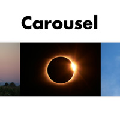
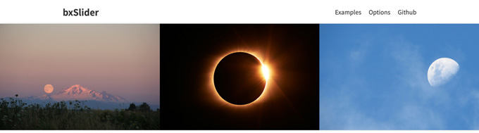

bxSlider（Carousel）
- 繰り返しループ表示（回転木馬のよう）

bxSliderのカスタマイズ
- １枚ずつズレていく設定
- 画像幅は適宜変更
$('.bxslider').bxSlider({ auto: true, minSlides: 3, maxSlides: 3, moveSlides: 1, slideWidth: 440, slideMargin: 0, speed: 2000, pager: false });


$('.bxslider').bxSlider({ auto: true, minSlides: 3, maxSlides: 3, moveSlides: 1, slideWidth: 440, slideMargin: 0, speed: 2000, pager: false });
